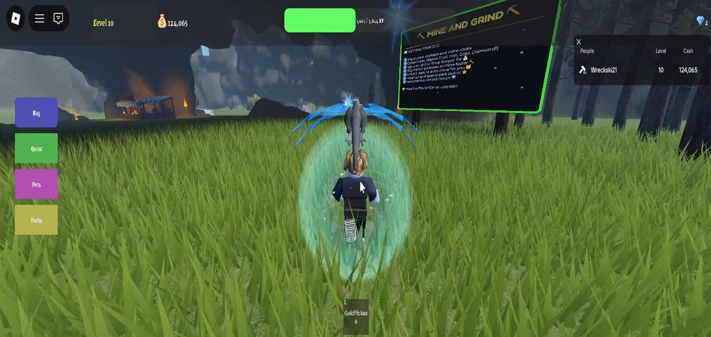
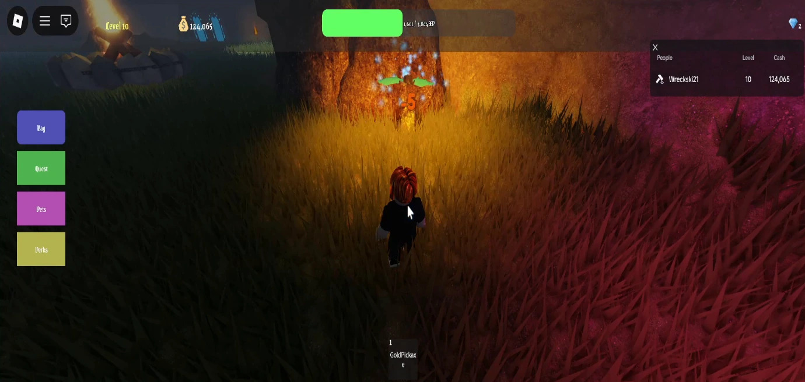

A visible progression layer
The current interface keeps level, currency and experience visible while the player explores the environment.
Roblox / Mining-game prototype
A Roblox project exploring a mining-game loop, character companions and progression-oriented interface design.
A cropped Roblox Studio playtest. The character explores the environment with a companion and approaches a resource near the end. This clip shows the current prototype; it does not establish that every visible menu or progression feature is complete.
00:55 / SILENT CAPTURE01 / Contribution scope
This page focuses on the current prototype and my mining, item, pet and perk-tree design work.
02 / In the footage
An avatar moves through a grassy mining environment with a dragon companion nearby. The interface includes level, currency and experience information, along with Bag, Quest, Pets and Perks buttons. A mining resource appears near the end of the sequence.
Development capture / September 2026. Cropped for viewing and shown at normal playback speed.
03 / Development notes
The current interface keeps level, currency and experience visible while the player explores the environment.
The player is accompanied by a dragon-like companion through the scene. The recording provides context for the pet-related part of the project.
Mine entrances, resources and tool-related interface elements establish the prototype theme within a single explorable environment.
04 / From the project


Keep exploring / Project 01
Next level / Let’s work together